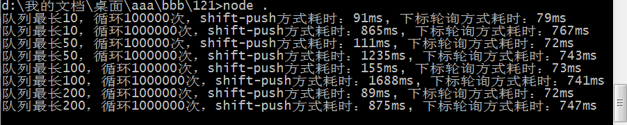

nodejs写聊天室消息存储的场景，比如一个房间的消息个数最多保留最近的100条，如果只是把消息存储在内存里，往往会使用如下写法：
var msgs=[], n=100
onmessage=msg=>{
msgs.push(msg) // 往队尾追加数据
if(msgs.length>n) msgs.shift() // 如果超过长度则把队头的删除
}push操作对性能不会有什么影响，因为仅仅是往原本的数据后面增加一项，如果数组长度没有超过上次预分配的内存空间则本次操作只会往已有内存的最近一格填入一个数据。但shift操作问题就大了，没有优化过的代码，常规操作是从队头删除一个数据，删除之后把后面的数据各往前移动一格。因此shift操作理论上会比push慢得多。
因为消息队列是一个定长顺序队列，因此我想到的优化方案是：
增加一个变量seq_i用于记录当前数据的尾部
每增加一个数据，则seq_i加1对消息数组的最大长度取余数，且把本次数据放到消息数组的seq_i这格
获取结果时，从seq_i开始到队列结尾的数据记为A，从0到seq_i为止的数据记为B，把A和B拼在一起就是当前的数据结果
然后我写了脚本以测试效果：
function typeA(seq_maxlen, repeat) {
let seq=[]
function get_result() {
return [...seq]
}
function snapshot() {
const r={
mem: (process.memoryUsage().heapUsed/1024/1024).toFixed(2),
time: Date.now(),
}
seq.push(r)
if(seq.length>seq_maxlen) seq.shift()
}
const a=Date.now()
for(let i=0; i<repeat; i++) snapshot()
get_result()
return Date.now()-a
}
function typeB(seq_maxlen, repeat) {
let seq=[], seq_i=0
function get_result() {
return [...seq.slice(seq_i, seq_maxlen), ...seq.slice(0, seq_i)]
}
function snapshot() {
const r={
mem: (process.memoryUsage().heapUsed/1024/1024).toFixed(2),
time: Date.now(),
}
seq[seq_i]=r
seq_i=(seq_i+1)%seq_maxlen
}
const a=Date.now()
for(let i=0; i<repeat; i++) snapshot()
get_result()
return Date.now()-a
}
function log(seq_maxlen, repeat) {
console.log(`队列最长${seq_maxlen}，循环${repeat}次，shift-push方式耗时：${typeA(seq_maxlen, repeat)}ms, 下标轮询方式耗时：${typeB(seq_maxlen, repeat)}ms`)
}
log(10, 1e5)
log(10, 1e6)
log(50, 1e5)
log(50, 1e6)
log(100, 1e5)
log(100, 1e6)
log(200, 1e5)
log(200, 1e6)

相关文档
随便看看